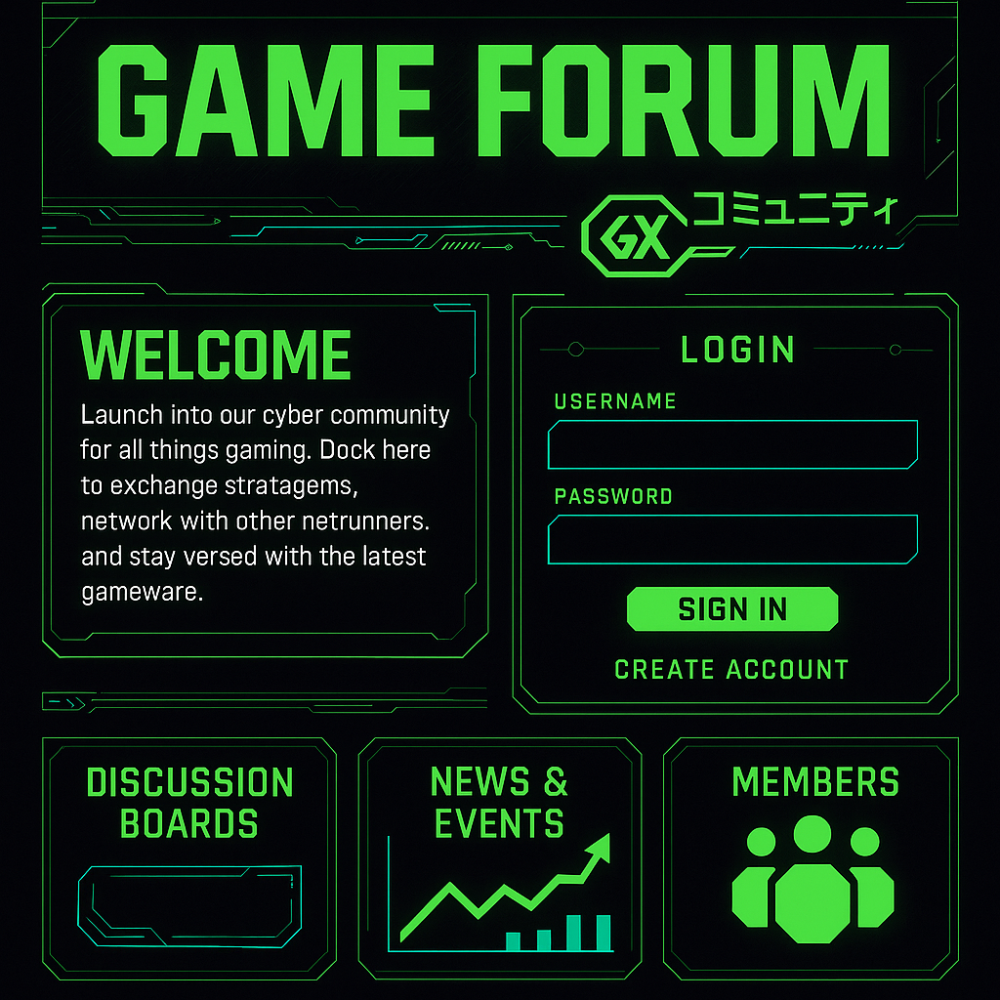
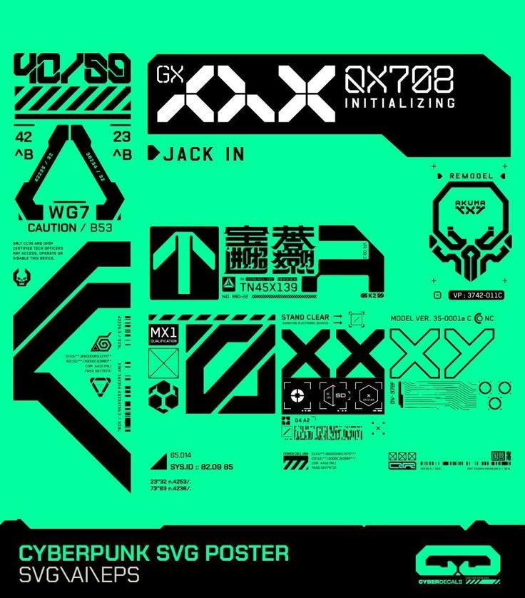
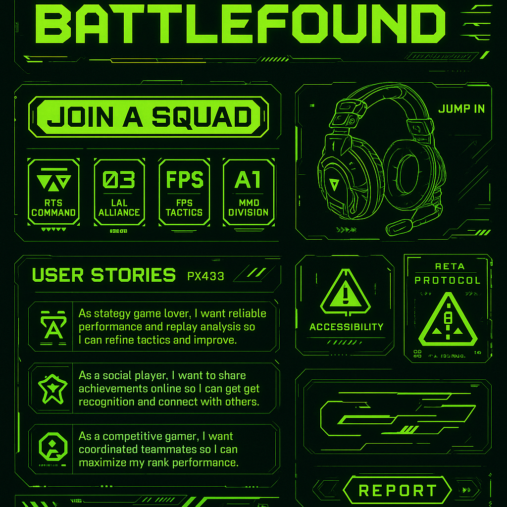
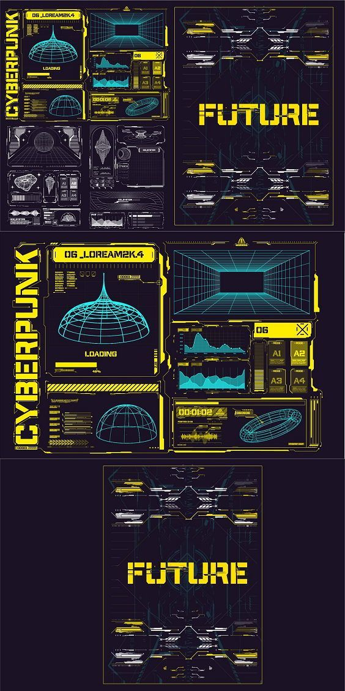
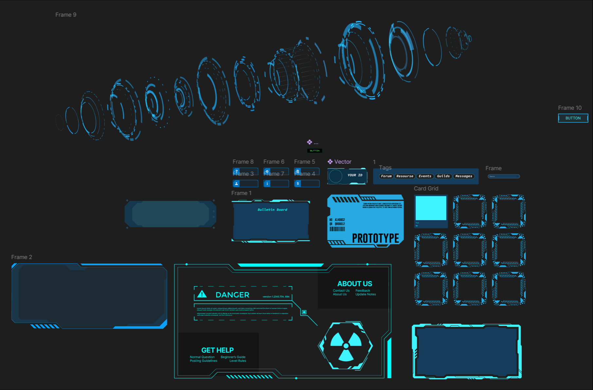

网站身份（Identity）：
本站定位为赛博朋克风格的游戏社区论坛，融合未来科技与社群协作，以“战术大师与资深游戏爱好者”为核心用户群，营造沉浸式的未来主义竞技与社交场所。 The site is positioned as a cyberpunk-themed gaming community forum that blends futuristic technology
with social collaboration. It targets “tactical masters and veteran gaming enthusiasts” as its core user
base, creating an immersive, futuristic arena for competition and social interaction.
情感基调（Emotional Tone）：
整体氛围充满动感与张力，使用霓虹绿点缀深色背景，营造出充满能量、互助与冒险精神的社区体验。 The overall tone is dynamic and tense, featuring neon green accents on a dark background to evoke a
community experience full of energy, cooperation, and the spirit of adventure.




主页图像示例（Homepage Image Samples）
Game Forum 仪表盘 / Game Forum Dashboard:
绿色霓虹边框与高对比提示用户这是核心入口，呼应“未来科技社区”身份。 The green neon border and high contrast signal to users that this is the core entry point, reflecting
the “Futuristic Tech Community” identity.
Cyberpunk SVG Poster / Cyberpunk SVG Poster:
亮绿背景与锐利几何图形营造张力，体现“动感”和“科技感”的情感基调。 The bright green background and sharp geometric shapes create tension, reflecting an emotional tone of
dynamism and technological sophistication.
BattleFound 用户故事板块 / BattleFound User Stories Section:
卡片式布局与图文结合，强调“社交分享”与“团队协作”，支持冒险与互助主题。 The card-based layout combined with imagery emphasizes social sharing and team collaboration,
supporting an adventure and cooperative theme.
Cyberpunk HUD Mockup / Cyberpunk HUD Mockup:
网格、图表与数据可视化元素，强化“战略部署”“黑客入侵”类未来游戏感。 Grid lines, charts, and data visualization elements reinforce a feeling on strategic deployment and
hacking infiltration.
首页文字示例（Homepage Text Sample）
“欢迎来到 Focus——在这里，你可以分享战术、组建联队，并肩作战，与全球玩家一起探索未来的无限可能。” “Welcome to Focus — where you share tactics, form squads, and stand shoulder to shoulder with gamers
worldwide, exploring the limitless possibilities of the future.”
注释 / Annotation：
“Focus”
一词凸显社区的核心枢纽地位；动词“分享”、“组建”和“并肩作战”呼应了合作与冒险的情感基调。配合界面中霓虹绿点缀与几何切割的视觉元素，它们共同强化了赛博朋克未来主义的身份，让用户沉浸于一个充满能量、协作探索的游戏社区。 “Focus” underscores the community’s role as a central hub; verbs like “share,” “form squads,” and
“stand shoulder to shoulder” echo the emotional tone of cooperation and adventure. Coupled with neon
green accents and geometric cut visuals, they reinforce the cyberpunk, futuristic identity, immersing
users in an energetic, collaborative exploration gaming community.
Behavioural Design Mock-ups

概述 / Overview：
这一组原型展示了如何通过界面和交互，运用行为设计原则来激发用户参与、维持社区活跃，并强化探索与分享行为。 These mock-ups demonstrate how interface elements and interactions apply behavioural design principles
to drive engagement, sustain community activity, and reinforce exploration and sharing.
1. 新手引导覆盖层 / Onboarding Tutorial Overlay
初次访问时，弹出简短分步教程，降低学习成本，引导用户完成第一次发帖或资源上传。 On first visit, a step-by-step overlay lowers the learning curve and guides users through their
first post or resource upload.
2. 成就徽章系统 / Achievement Badges
用户发布首个主题、被点赞达 10 次、上传优质资源后，即可获得可收集的霓虹徽章，提供即时正反馈。 Neon badges are awarded for first post, 10 likes, or quality resource uploads—delivering instant
positive reinforcement.
3. 进度追踪条 / Progress Tracking Bar
在个人主页顶部显示“社区等级”进度条，激励用户解锁新权限（如创建公会）。 A “Community Level” progress bar on the profile page motivates users to unlock new privileges (e.g.,
guild creation).
4. 社交反馈流 / Social Feedback Feed
实时显示好友点赞、评论和新关注通知，利用社交证明增强用户归属感与互动欲望。 A live feed of friends’ likes, comments, and follows uses social proof to enhance belonging and
drive further interaction.
行为原则 / Behavioural Principles：
• 触发器（Triggers）：教程覆盖层和通知提醒作为外部触发，提示行动。
• 能力（Ability）：简化首帖流程和资源上传，降低行为难度。
• 动机（Motivation）：成就徽章与社交反馈提升内在和外在动机。
• 奖励（Reward）：即时徽章与进度条带来可视化成就感。 • Triggers: Tutorial overlay and notifications act as external prompts.
• Ability: Simplified posting/upload flow lowers barriers.
• Motivation: Badges and social feedback boost intrinsic and extrinsic drive.
• Reward: Instant badges and progress bars deliver visible satisfaction.